速览
一般人似乎分不清总监和制作人——樱井也常被称作「樱井制作人」，但他是总监。界线因公司、项目而异，这次讲两者的区别。总监就是「监督」，实际上他也被叫过「樱井监督」：他和很多公司的人合作，有的公司风气会给总监加上「监督」。（这在海外怎么翻译？监督翻过去就只是 Director。）总监拥有游戏内容几乎全部的判断权，从头想游戏企划多半也是总监的职责；就像导演和编剧分开一样，游戏企划与游戏设计也可能分给其他策划，但如果从企划阶段不把握根本魅力就很难，所以还是总监出点子最好。通常总监一队一人：顾名思义是决定方针的职务，为了避免意见分裂、方针摇摆，分工时也要明确最终决定权在谁。制作人则负责团队管理和宣传等，与公司等组织密切相关，管理资金运营、「座组」即人员配置等——总监也可以说是制作人决定的角色之一；周密计算开发费和预期销售额，使成本效益最大化；也做宣传活动——再好的游戏不被知道就没意义，所以有时会觉得不是想出游戏点子的创作者却常接受采访，就是这种分工。总监通常特别忙，又对团队很重要，为了确保时间，制作人出面宣传是不可或缺的。但制作人不一定不参与创作，反而也有人点子不断；总监也不一定不做宣传类活动：樱井就常兼做制作人性质的事，参战影片也是宣传的一环。总监多半专注于一个项目，制作人常常同时兼顾其他项目；总监对一款软件的品质负责，制作人则从全公司角度俯瞰负责的项目进展如何。当然会有意见分歧，但他和任天堂合作顺畅，相当被信任，很少为意见的差异烦恼。立场不同，但想做出好作品的心是一样的，要互相合作、平衡地推进。
1. 常被混淆的两个职位 0:03
一般人似乎分不清总监和制作人。樱井也常被称作「樱井制作人」，但他其实是总监。
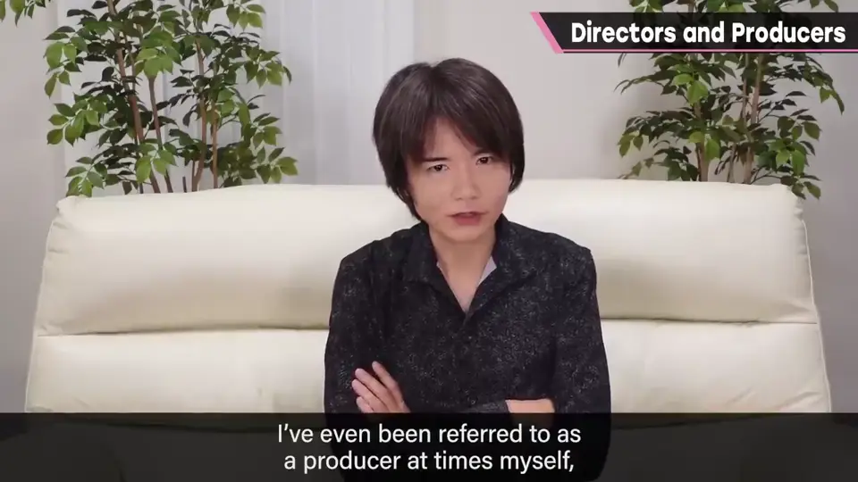
两者的界线因公司、项目而各不相同，这次讲讲它们的区别。
2. 总监：「监督」 0:30
先说总监。总监就是「监督」（像电影导演）。实际上他也被叫过「樱井监督」：他和很多公司的人合作过，有的公司风气会给总监加上「监督」的称呼。
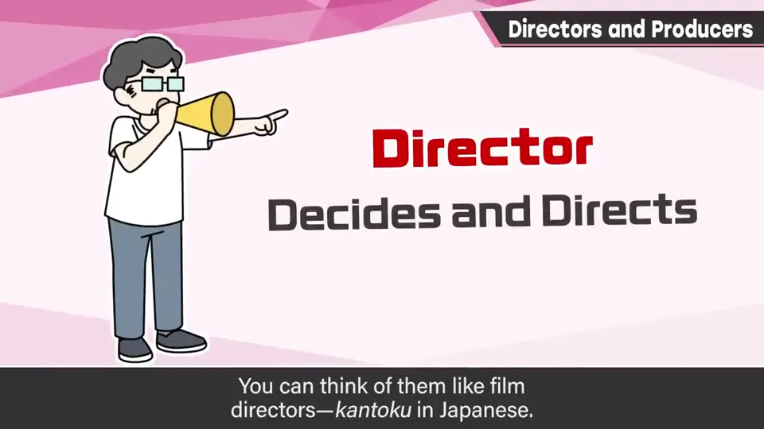
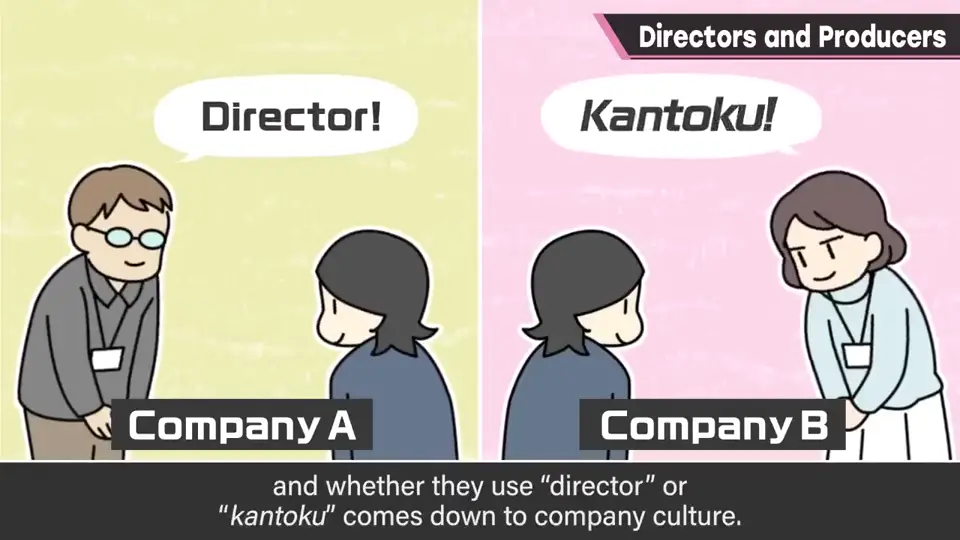
（这在海外怎么翻译呢？「监督」翻译过去也就只是 Director。）
总监拥有游戏内容上几乎全部的判断权，从头构思游戏企划多半也是总监的职责。
就像导演和编剧分开那样，游戏企划和游戏设计有时也会分给其他策划。但从企划阶段起就不把握根本的魅力会很难，所以还是总监出点子最好。
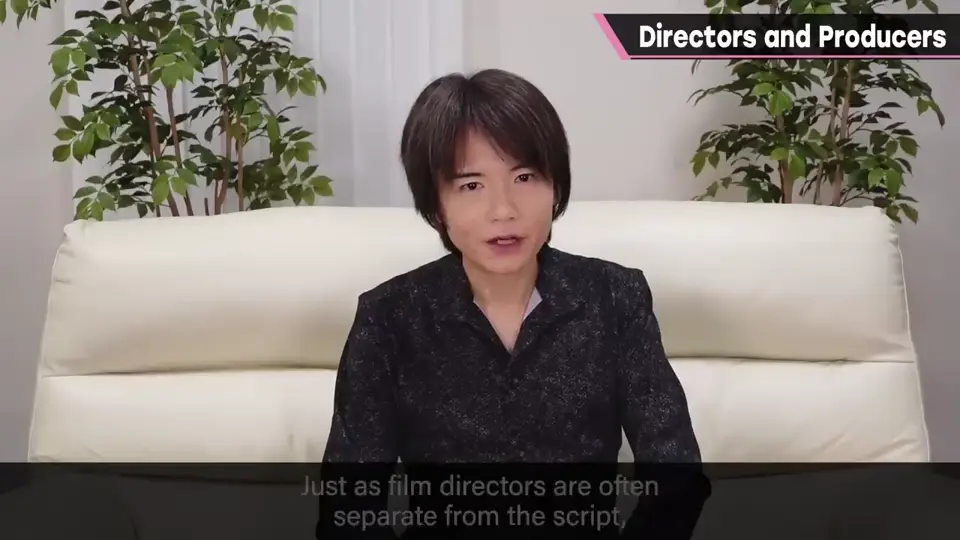
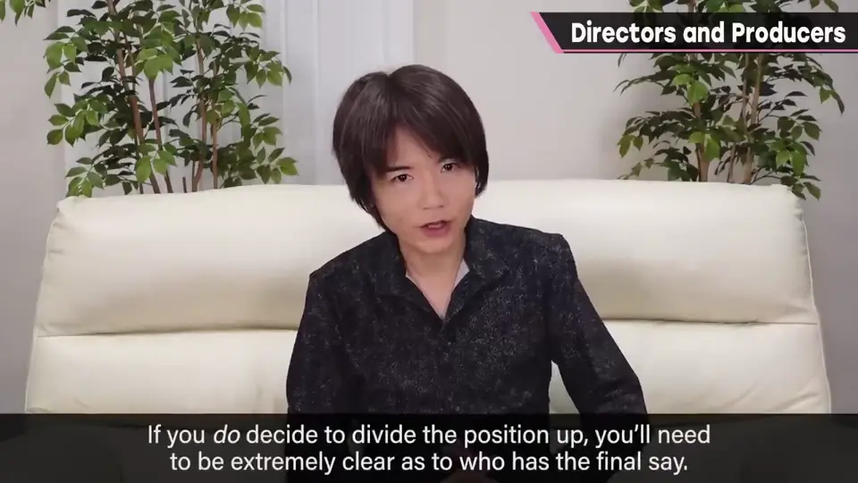
3. 制作人：管理与宣传 1:38
另一方面，制作人负责团队管理和宣传等。与公司等组织紧密相连，处理资金运营和「座组」——也就是员工配置。总监也可以说是制作人决定的角色之一。
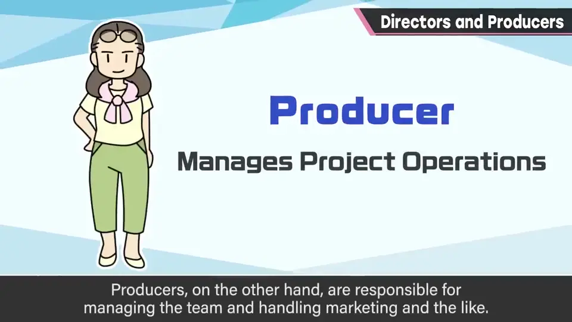
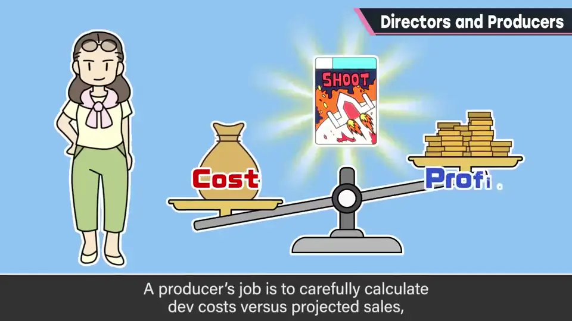
制作人的职责是周密计算开发费和预期销售额，使成本效益最大化。
也负责宣传活动——再好的游戏，不被人知道就没意义。有时觉得「不是想出游戏点子的创作者，却常接受采访」，就是这种分工的缘故。
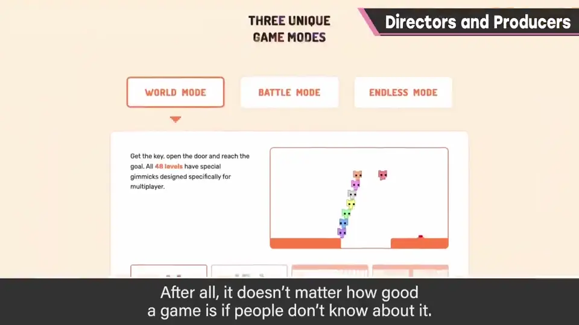
总监通常特别忙，对团队又非常重要，为了确保总监的时间，制作人出面宣传是不可或缺的。
4. 界线是模糊的 2:40
但制作人不一定不参与创作，反而也会有点子不断的人；总监也不一定不做宣传类活动。樱井就常兼做制作人性质的事，参战影片也是宣传的一环。
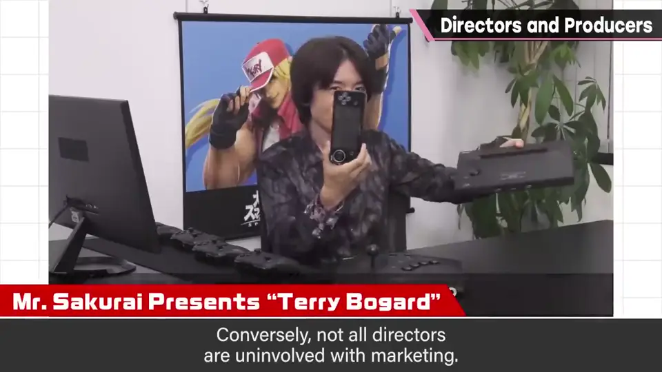
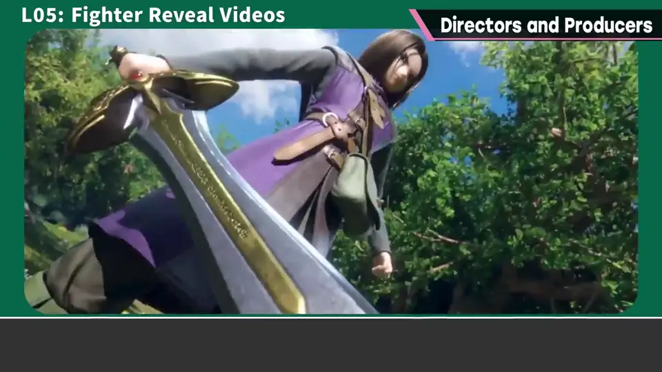
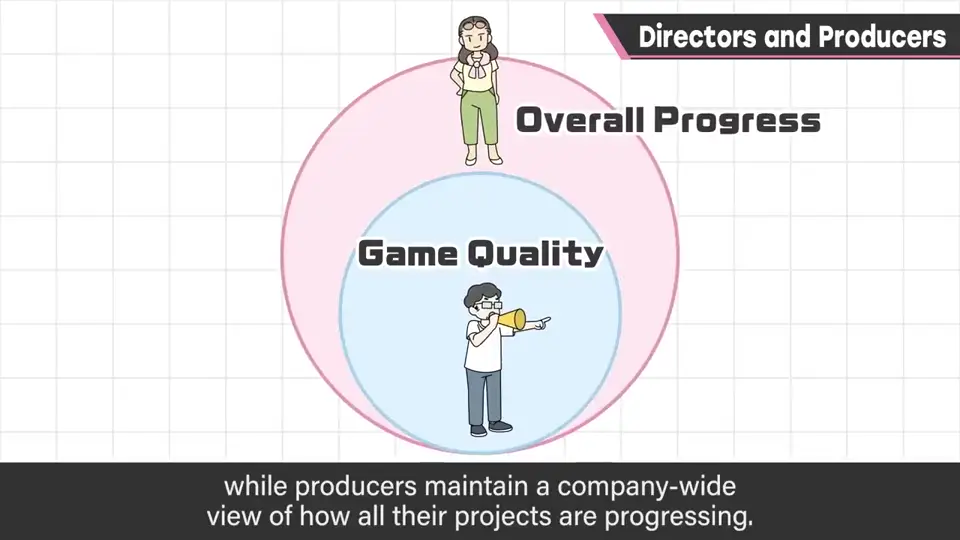
总监大多专注于一个项目，而制作人常常同时兼顾其他项目。
5. 互相合作 3:30
当然也会有意见分歧，但樱井认为他和任天堂合作得很顺畅：相当被信任，很少为意见差异烦恼。
总监和制作人立场不同，但想做出好作品的心情不变。要互相合作，平衡地推进。
自测题
1. 总监在游戏开发中扮演什么角色？
「监督」：拥有游戏内容几乎全部判断权，通常一队一人，多半也负责构思企划。 0:30
2. 制作人主要负责什么？
团队管理、资金运营、人员配置、计算成本效益和宣传。 1:38
3. 两者在责任视角上有何不同？
总监对一款软件的品质负责；制作人从全公司角度俯瞰项目进展，常兼顾多个项目。 3:10